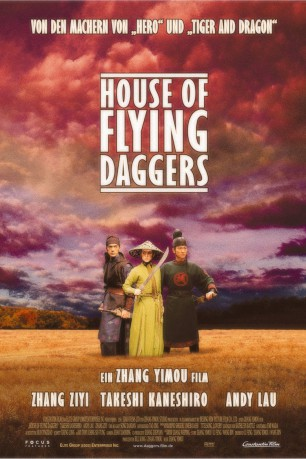

#3602 House of Flying Daggers
Auszeichnungen: für 1 Oscars nominiert
 gesehen am 12.05.2016
gesehen am 12.05.2016
 
 IMDB-Wertung: 7.6 / 10
IMDB-Wertung: 7.6 / 10  Metascore: 0
Metascore: 0 
Visuell-opulentes Action-Drama von "Hero"-Regisseur Zhang Yimou. Im Jahre 859 wird China von der Tang-Dynastie regiert. Doch die Untergrundorganisation "Haus der fliegenden Dolche" will die korrupte Regierung stürzen. Die Polizisten Jin (Takeshi Kaneshiro) und Leo (Andy Lau) versuchen über die blinde Mei (Ziyi Zhang), das Versteck der Rebellen zu finden. Doch Jin verliebt sich in die Rebellin.
Jahr: 2004
Dauer: 119 Minuten
FSK: 12
Land: China Studio: Constantin FilmTonspuren: DD5.1 - ,
Untertitel: Englisch,
Auflösung: 1080p (1920x808) Größe: 9830 MB
Genre: Action, Drama, Abenteuer, Liebe
Regisseur: Yimou Zhang
Drehbuch: Cornelius Ryan
Soundtrack:
Darsteller:
 Takeshi Kaneshiro als Jin
Takeshi Kaneshiro als Jin Andy Lau als Leo
Andy Lau als Leo Ziyi Zhang als Xiao Mei
Ziyi Zhang als Xiao Mei- Dandan Song als Yee
- Hongfei Zhao als Performer
- Jun Guo als Performer
- Shu Zhang als Performer
- Jiusheng Wang als Performer
- Zhengyong Zhang als Performer
- Yongxin Wang als Performer
- Dong Liu als Performer
- Qi Zi als Performer
- Xuedong Qu als Performer
- Liping Tian als Performer
- Hongwei Zhao als Performer
- Weina Huang als Performer
- Dan Ge als Performer
- Xiadong Yang als Performer
- Yisha Shang als Performer
- Ying Liu als Performer
- Jingwen Huang als Performer
- Kejia Zhang als Performer
- Tianyou Luo als Performer
- Lin Zhu als Performer
- Jiwei Hu als Performer
- Yu Hong als Performer
- Bojie Hao als Performer
- Jiajun Zhu als Performer
- Ge Xu als Performer
- Jingxiu Chou als Performer
- Cuifang Guo als Performer
- Chengyuan Li als Performer
- Shuo Zhang als Performer
- Jidong Zhang als Performer
- Qiang Li als Performer
- Yang Fu als Performer
- Yang Guang als Performer
- Yang Wen als Performer
- Liang Chen als Performer
- Xiuqiang Lin als Performer
- Kun Wang als Performer
- Meng Li als Performer
- Ming Dong als Performer
- Xiaodong Zheng als Performer
- Chacha Song als Performer
- Xuanyi Wang als Performer
- Xueying Huang als Performer
Datei: X:\HD-Eastern-Classic(A-M)\House of Flying Daggers (2004, FSK12, 1920x808).mkv seit 08.05.2016
Festplatte: HD Eastern+Western
 Es gibt insgesamt 63 Filme in der Gruppe 'HD-Eastern-Classic(A-M)'
Es gibt insgesamt 63 Filme in der Gruppe 'HD-Eastern-Classic(A-M)'